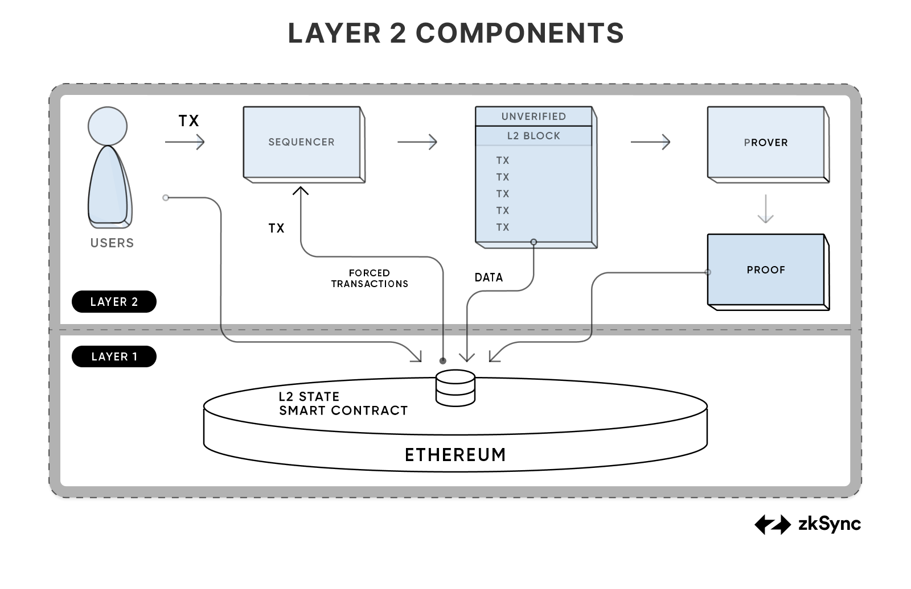

Overview
As stated in the introduction, the ZK Stack can be used to launch rollups. These rollups have some operators that are needed to run it, these are the sequencer and the prover, they create blocks and proofs, and submit them to the L1 contract.
A user submits their transaction to the sequencer. The job of the sequencer is to collect transactions and execute them using the zkEVM, and to provide a soft confirmation to the user that their transaction was executed. If the user chooses they can force the sequencer to include their transaction by submitting it via L1. After the sequencer executes the block, it sends it over to the prover, who creates a cryptographic proof of the block’s execution. This proof is then sent to the L1 contract alongside the necessary data. On the L1 a smart contract verifies that the proof is valid and all the data has been submitted, and the rollup’s state is also updated in the contract.

The core of this mechanism was the execution of transactions. The ZK Stack uses the zkEVM for this, which is similar to the EVM, but its role is different than the EVM’s role in Ethereum.
Transactions can also be submitted via L1. This happens via the same process that allows L1<>L2 communication. This method provides the rollup with censorship resistance, and allows trustless bridges to the L1.
The sequencer collects transactions into blocks [blocks][TODO], similarly to Ethereum. To provide the best UX the protocol has small blocks with quick soft confirmations for the users. Unlike Ethereum, the zkEVM does not just have blocks, but also batches, which are just a collection of blocks. A batch is the unit that the prover processes.
Before we submit a proof we send the data to L1. Instead of submitting the data of each transaction, we submit how the state of the blockchain changes, this change is called the state diff. This approach allows the transactions that change the same storage slots to be very cheap, since these transactions don’t incur additional data costs.
Finally at the end of the process, we create the proofs and send them to L1. Our Boojum proof system provides excellent performance, and can be run on just 16Gb of GPU RAM. This will enable the proof generation to be truly decentralized.
Up to this point we have only talked about a single chain. We will connect these chains into a single ecosystem, called [ZK Chain ecosystem][TODO].